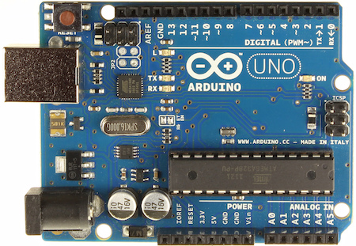
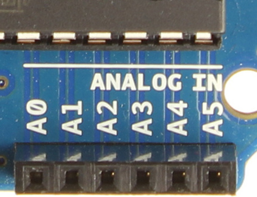
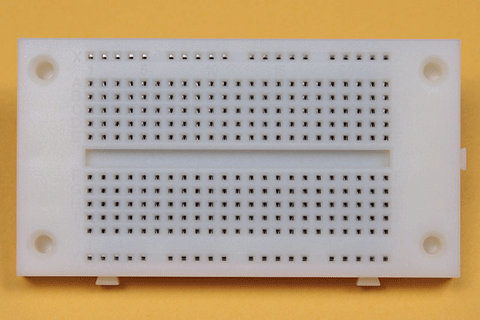
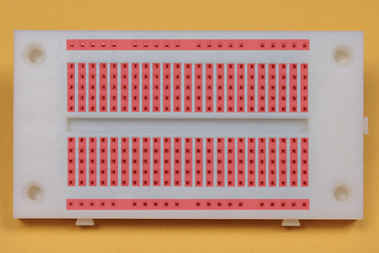
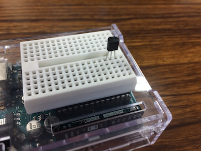
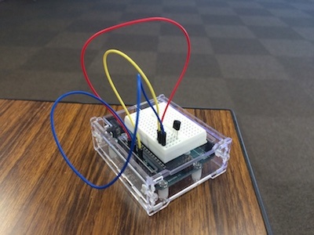
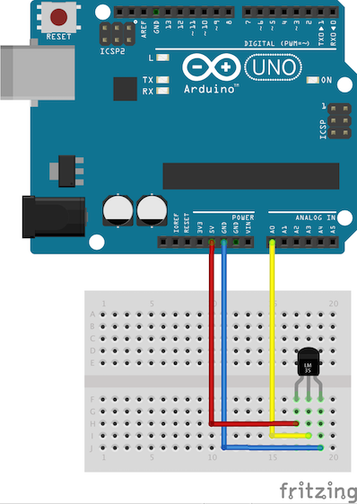
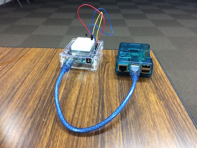

Raspberry Piで
気温を知らせるTwitter Botをつくる
自己紹介
 植田達郎（@weed_7777）
植田達郎（@weed_7777）
- フリーランス
- JavaScript
- 物理教材ビデオ作成
- 趣味
- 歴史、城巡り
温度センサ

- 120円
温度の測り方

- 摂氏（℃）に比例した電圧出力
- 例
- ０℃→０Ｖ
- ２０℃→２００ｍＶ
- 例
- 要は、電圧を測れば、温度がわかる
Arduino

- 電圧を測る
- 3000円
電圧を測る

- Arduinoには電圧を測ることができるピンが6つある
ブレッドボード
 
- 温度センサとArduinoをつなぐために使う
- 内部が右図のように導通している
温度センサを配置する

- こんな感じに刺します
配線する

- こんな感じにつないでいきます
配線図

プログラム
void setup() {
}
void loop() {
A_val = analogRead( A_inPin );
delay(1000);
}
setup()とloop()だけ書く- 1秒ごとに電圧を測る（1024段階）
温度に直す
tempC = ((5.0 * A_val) / 1024) * 100;
- 電圧を求めるには
- 1024段階で 5 V
- 入力値を1024で割って、5をかける
- 温度を求めるには
- 1℃で 10 mV = 1/100 V
- 電圧に100をかける
シリアル通信

- ArduinoからRaspberry Piにデータを送る
データを送る
void setup() {
Serial.begin(9600); // シリアル通信の初期化
}
void loop() {
...
Serial.println( tempC ); // シリアル通信に温度を書き込んでいる
...
}
データを受け取る
- Raspberry PiはLinuxなので、
- 受け取るプログラムはいろいろな言語で書ける
- C
- Python
- Ruby
- Java
- Node（今回使用）
Nodeプログラム（1）
serialport = require('serialport')
portName = '/dev/ttyACM0'
sp = new serialport.SerialPort portName, {
baudRate: 9600
dataBits: 8
parity: 'none'
stopBits: 1
flowControl: false
parser: serialport.parsers.readline("\n")
}
...
- シリアルポートを初期化する
Nodeプログラム（2）
...
sp.on 'data', (input) ->
console.log "部屋の温度は、#{input}℃です"
- シリアルポートからデータが送られてくるたびに、コンソールにメッセージを出す
- 表示された！（嬉しい）
Twitter Bot

- Hubotを使う
- GitHub社製Bot
- Slack, IRCなどのチャットサービス用に、Slackアダプタ、IRCアダプタなどがある
- CoffeeScript（JavaScript）でいろいろカスタマイズできる
- 今回はTwitterアダプタ（後述）を改造して使う
- Raspberry PiにHubotをインストールする
hubot-twitter-userstream
作者。素性不明。
- HubotのTwitterアダプタの一つ
- パブリックストリームを監視するように改造する
- ツイートが来たら温度を返すスクリプトを書く